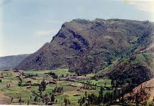
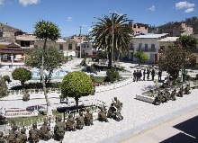

Rostro de Cristo

El perfil de Cristo no solo queda como un atractivo turístico, sino que también fue reconocido como patrimonio cultural, por ello es una visita obligada que deben hacer los cientos de turistas que llegan a la tierra de los Coremarca, como se denomina en honor a sus fundadores.
Plaza de Armas
Epoca Republicana
Bambamarca fue establecida como Villa en la época de la independencia. En 1 828 se le conoce con el nombre de VILLA DE SAN CARLOS DE BAMBAMARCA. Creada como Distrito por Ley 12191 del 02 de enero de 1 857, perteneciendo a la provincia de Chota. El 24 de agosto de 1 870 pasó a formar parte de la nueva Provincia de Hualgayoc.